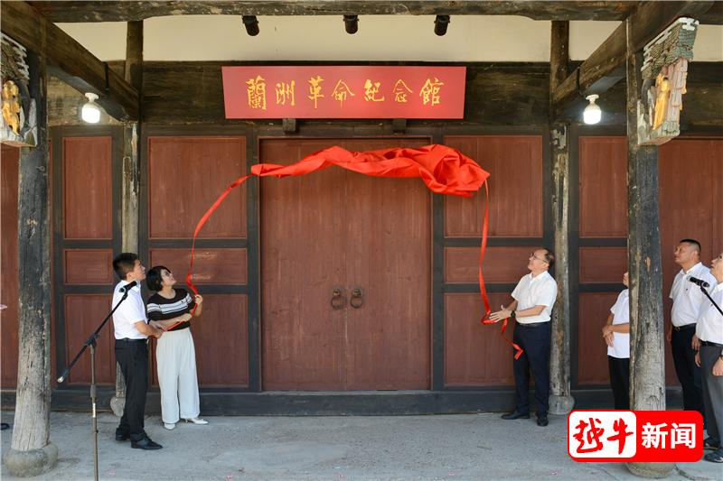
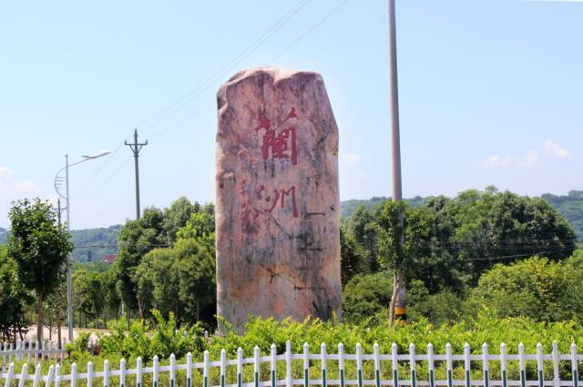

1943 年 11 月，日军为加强对浙东根据地的封锁，每天从嵊州县城向黄泽镇运输军火和粮食，运输队由 10 余名日军和 30 余名伪军护送，沿黄泽江岸边的公路行进。中共嵊东抗日自卫队决定在黄泽江下游的 “石埠头” 路段设伏，这里两岸是陡峭的山壁，公路狭窄，是伏击的绝佳地点。
战前，自卫队队长张士良找到黄泽镇的 “船老大” 王水生，希望他能帮忙运送队员到对岸隐蔽。王水生二话不说，召集了 8 名渔民，用 3 艘渔船在深夜将 50 余名队员送到指定位置。为了不让日军发现，渔民们还把船桨用布条包裹，划行时几乎没有声音。
11 月 15 日清晨，日军运输队进入伏击圈。随着张士良的一声令下，自卫队队员从两岸开火，日军顿时乱作一团。此时，王水生和渔民们也拿起锄头、鱼叉，从江边的芦苇丛中冲出来，配合队员打击溃散的伪军。一名日军试图跳江逃跑，被王水生用鱼叉刺中大腿，当场被俘。这场战斗仅用了 20 分钟，就缴获了 2 挺机枪、15 支步枪和 10 余车粮食，而自卫队无一伤亡。


战斗结束后，日军对黄泽镇进行报复性 “清剿”，要求群众交出 “共匪” 和渔民。但无论日军如何威逼利诱，没有一个人吐露实情。日军抓不到人，只好放火烧了几间空房后撤离。
“黄泽江伏击战” 的胜利，是“人民群众是社会变革的决定力量”的典型案例。渔民们没有武器，却凭借对家乡地形的熟悉和对革命的支持，成为战斗胜利的关键力量 —— 这印证了马原中 “实践是认识的来源”，渔民对黄泽江水文、地形的认识（源于长期的捕鱼实践），转化为了革命斗争的实践力量。同时，群众在 “清剿” 中对革命的保护，体现了“社会意识的相对独立性”，革命理想所凝聚的精神力量，能够在物质条件艰苦的情况下，支撑人们战胜强敌。
返回